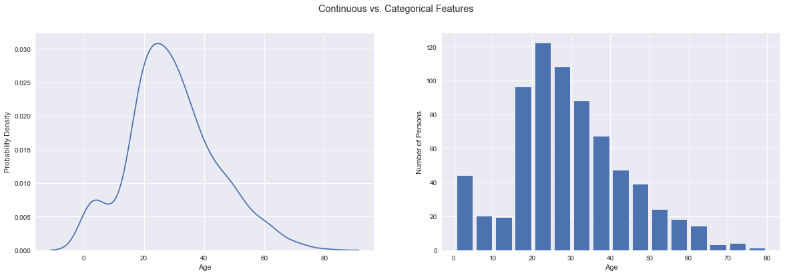
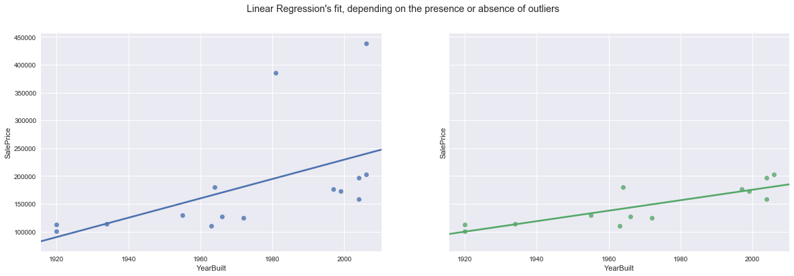
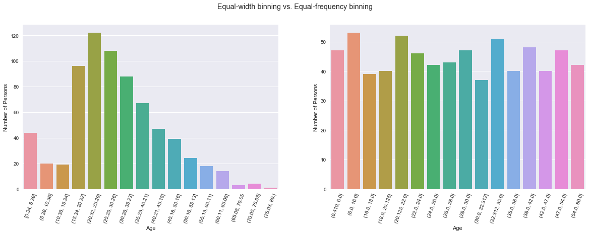
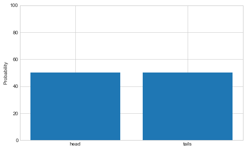
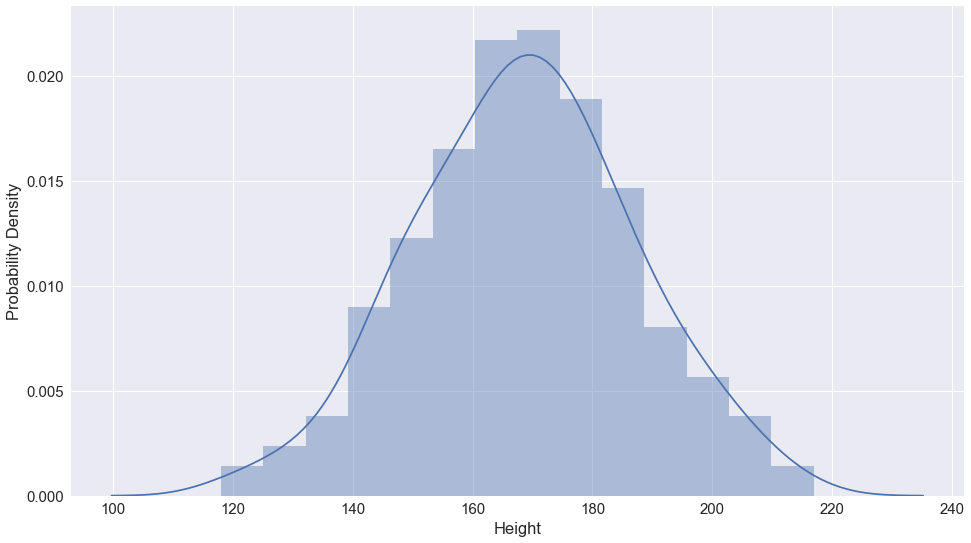
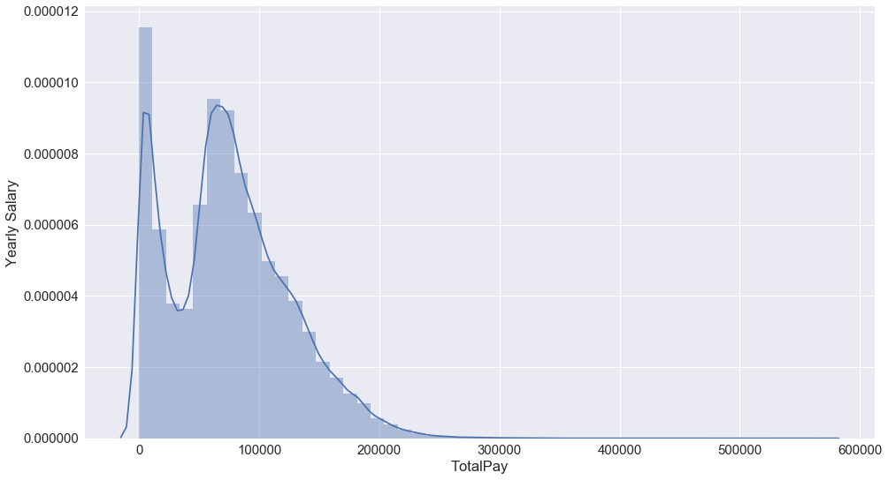
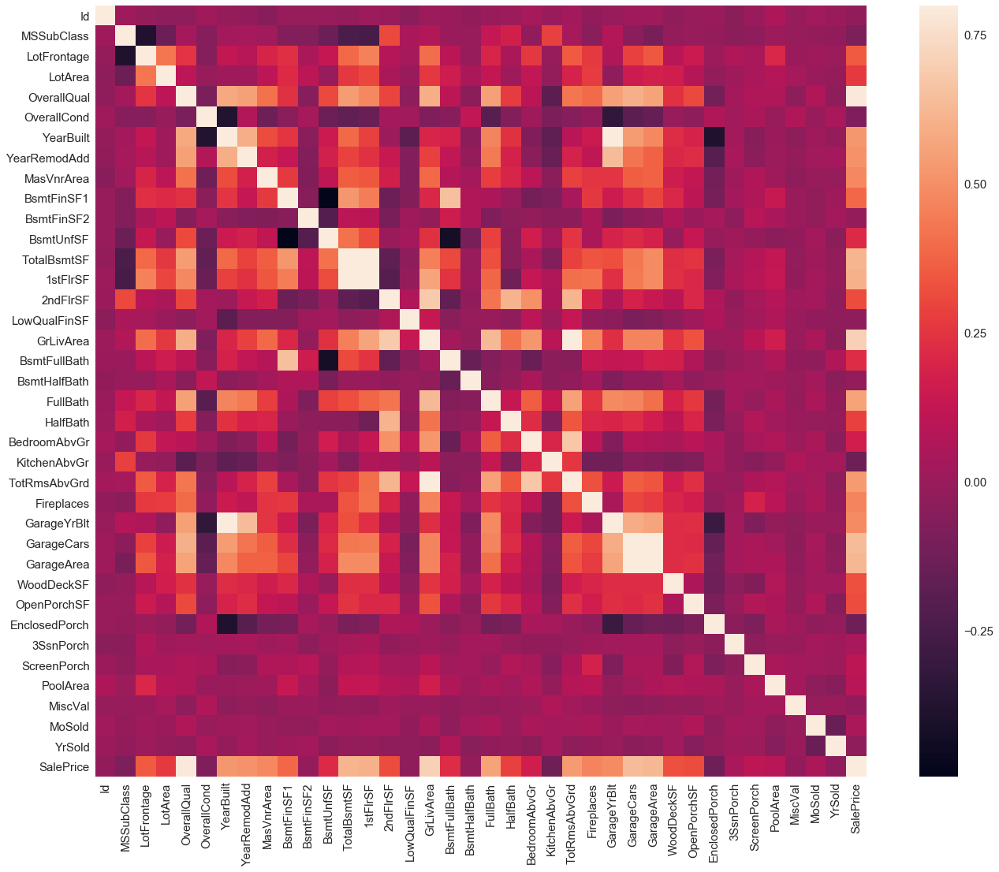
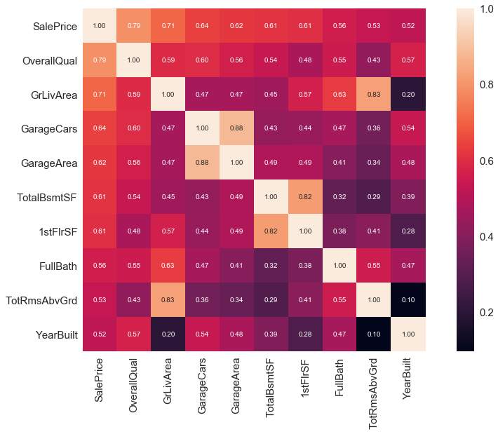
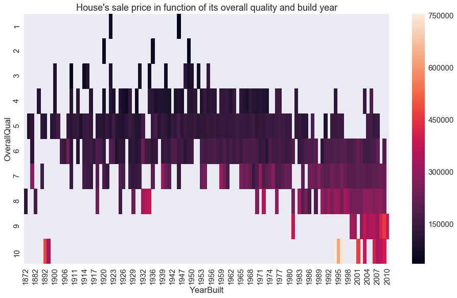

Let’s talk about a very important part of machine learning, that should be done before deciding on and using a Machine Learning algorithm to build a model – data preparation! We’ll be talking about data exploration and feature engineering, among some other topics.
It’s extremely important to take a look at your data before doing anything else, and to pre-process it so you can reap the best results. In other words, you want to understand your data, to either choose the algorithm that best adapts to it, or to transform your data so it better fits your chosen algorithm.
You should do this because every algorithm has some assumptions about what the data should look like. Only by studying and transforming your data can you truly leverage any ML algorithm’s full power1.
Without further ado, let’s take a look at this process!
The first step, that must be done before all others, is data integration – if your data comes from multiple sources, you must consolidate it in a single data set. Above all, you want to make your final dataset the most consistent possible. This step only really applies if your data comes from several different datasets.
When you first analyze your dataset, there are several things you want to look at, in order to understand your data. This means, for example, understanding how your features are distributed, and how they influence one another, among other things.
Once again, let’s break this down:
A feature can be categorical or continuous (also called numerical). A categorical feature is a feature that uses a discrete spectrum instead of a continuous one. In contrast, a continuous or numerical feature is a feature that has a continuous spectrum of possible values.
For example, eye color is a categorical feature, but house prices are an example of a continuous feature. House price ranges, on the other hand (i.e. “<100K”, “100K to 500K”, “>500K”), are once again a categorical feature. The distinction lies on whether your feature can only take a value from a relatively small pool of finites values (categorical), or if there isn’t really such a restriction (continuous).

To guarantee your data’s quality, you have to look at your data, clean it up, and handle any irregularities in it.
It’s pretty easy to see why missing values can bog down your ML algorithm. In the most extreme case, if your target feature is missing in enough training examples, your algorithm might just learn to output ‘NaN’2 and be done with it.
Before deciding how you are going to deal with your missing data, you must first understand why your dataset has missing data. Was because it was not possible to obtain it (i.e. a feature called ‘Garage Size’, where the corresponding house had no garage), or was it just overlooked (i.e. the house could have had a garage, but there’s no way to know for sure, since only some house owners were asked their garage’s size)? If it’s the first case, you might want to just replace missing values with 0, or a previously unused value, in order to represent this new scenario; whereas in the second case, you might want to replace it with the median or mode3.
There are several ways to deal with missing data, and each have their own pros and cons.
Outliers are data points that don’t fit in that feature’s distribution. For example, they’re very far away from other points, and when compared to most of your data for that feature, seem either extremely small or extremely big. In rigorous terms, an outlier is a data point (or an observation) 3 or more standard deviations away from the mean of its distribution.
Outliers can be data points you want to discard (they occur very few times, and represent erroneous/corrupt data), or can represent important data, like specific (but not negligible) behaviors, or be valuable for anomaly-detection, etc.
Depending on your algorithm (and its beliefs), outliers can affect your model’s fit to your data, and hurt your performance. Linear Regression demonstrates this – it’s very sensitive to outliers, because it tries to minimize distances squared, so it gives a disproportional weight to outliers.
In more detail, depending on your dataset, these are the paths you may want to follow:
In addition, you may also want to clip (the value of) an outlier, when you still want to include the outliers in your data, because they weren’t errors, but don’t want your algorithm to give them much more value than they’d give an ‘ordinary’ data point, you can clip their value. In other words, you can do something along the lines of: if data point is 3 (or -3) or more standard deviations from mean, then change data point’s value to exactly 3 (or -3) times the standard deviation, for example.
It’s particularly useful to clip outliers into a more acceptable range when your chosen algorithm is susceptible to overvalue outliers (like Linear Regression):

Binning is taking a continuous feature and transforming it into a categorical one, by assigning buckets for value ranges. This can also help not only your algorithm4, but yourself as well, as you study the correlation between that particular feature and the target feature, for example.
There are two common approaches to binning: equal-width binning and equal-frequency binning. Equal-width binning means all buckets have the same width, that is, they all have equal gaps between the starting and ending points. Equal-frequency binning means all buckets have (approximately) the same number of entries.

Let’s analyze scaling first. Scaling changes the range of the values of a given feature, but not their distribution5. Some algorithms, like kNN (k-Nearest Neighbors) and SVM (Support Vector Machines), rely on the distance between features. It’s important your features are on the same scale, because the algorithm isn’t going to infer scales – and if your features aren’t on the same scale, your algorithm is only going to care about the one which have the biggest range of possible values.
If your data ranges from \(a\) to \(b\), then you could range it from 0 to 1 by applying the following formula, where \(x\) is your feature’s value: $$z = \frac{x-a}{b-a}$$ where \(z\) is your scaled feature. Other formulas can be used for scaling, as well.
On the other hand, normalization changes the distribution of a given feature so it becomes a Normal (or Gaussian) distribution. You want to do this when your algorithm assumes (or requires, to perform best) normally-distributed values. Examples of algorithms that require normalization include Linear Regression, Gaussian Naïve Bayes, and Linear Discriminant Analysis (LDA).
To normalize a given variable \(x\), you’d calculate $$z = \frac{x-\mu_{x}}{\sigma_{x}}$$ where \(z\) is your scaled feature, \(\mu_{x}\) is the mean of \(x\)’s distribution (for \(m\) training examples, you can calculate \(\mu_{x} = \frac{1}{m} \cdot \sum x_{i}\)), and \(\sigma_{x}\) is the standard deviation (which you can obtain with \(\sigma_{x} = \sqrt{\frac{1}{m} \cdot \sum [(x_{i} - \mu_{x})^2]}\)).6
Up until now, I’ve only heard of Data Augmentation when training algorithms using images, like OCR (Optical Character Recognition), image classification, handwritten-digits recognition, etc., or sound, like speech recognition.
This practice consists of taking your input data, and adding distortions or other modifications to it, in order to produce a semi-new training example. While this training example isn’t as good as a truly new training example, it does make a difference in your algorithms performance.
Examples could include flipping an image horizontally, making it wobblier, rotating it, zooming in, or any combination of these (and many other possible) techniques. It could also result from, in the speech recognition example, combining two different audio tracks (i.e. adding background noise).
Data Augmentation requires a reasonable amount of starting data, as applying it to a small dataset could result in overfitting. When used correctly, however, it allows the influx of semi-new examples to significantly boost your algorithm’s performance.
A distribution relates a variable’s possible value with their frequency. In other words, a distribution is the relationship between a variable’s possible value and that value’s probability. For example, if you toss a coin, you’d have 50% probability of getting heads and 50% probability of getting tails:

If you select a random person in the street and measure their height, then the distribution is probably closer to this one:

It’s also important to study if your most important features follow a distribution (or, maybe more accurately, what distribution they follow). This can lead to important insights regarding whether or not you should normalize your data, whether or not there are unexpected inconsistencies in your data, and can even help you decide which ML algorithm best suits your problem.
There are lots of different distributions, and I encourage you to take a look on the web at them, so you get an idea of which distributions exist and how they can look. That way, you’ll always be prepared when A WILD DATA DISTRIBUTION APPEARS!
In the context of Machine Learning, the distributions you should be familiar with are the following:
Other popular distributions include Poisson’s distribution, and the geometric/exponential distribution.
Checking your feature’s distributions is important, because it’ll help you understand if a given ML algorithm is an adequate fit (because, remember, every learning algorithm has its own set of assumptions about how the input and output data are distributed, and to truly leverage ML algorithms, you must work with their assumptions, not despite them).
Another advantage of checking your feature’s distributions is guaranteeing data quality – for example, you can see there is something wrong with the following salary distribution:

The next step to look at, and in my opinion, the most interesting one, is the relationships between your various features. For example, how strongly are the House Price and House Size features related? Does House Price strongly depend on House Size, or is it pretty indifferent to it?
My favorite way to look at data dependencies, or data correlations is through heatmaps. A heatmap represents a matrix, where the value of each cell is color-coded. Usually, they are accompanied by a color-bar which relates the colors with their respective values.
A correlation matrix will be filled with values ranging from -1 to 1, representing the correlation between any two features7. 1 represents a very strong positive correlation (the two features values are proportional8), while -1 represents a very strong negative correlation (meaning the features values are inversely proportional). The actual values between any two features should be lie somewhere between 1 and -1. 0 represents no correlation at all between the two features.
Every feature has a correlation of 1 with itself, leading the correlation matrix to have a diagonal with only 1s.
To make sense of all this information, let’s look at a heatmap of a correlation matrix for a Houses Sales dataset:

As the color bar on the right indicates, the color of each square represents how strong the correlation between two features is. Purple represents a correlation of 0, that is, no relation between two features. A very bright color represents a very strong correlation, or dependency between the values of the two features. Remember that every feature has a correlation of 1 with itself, hence the bright diagonal. On the other end of the spectrum, a very dark color represents a strong negative correlation between the values of two features.
Finally, a correlation matrix is symmetric (if you cut it along the diagonal, the two triangles you’d get are symmetric), so you need only look at one of the triangles.
Let’s look at the feature SalePrice, which is the feature you would try to predict, if you were building a model to predict house prices. Focusing on the last row, you can see that SalePrice is influenced the most by the house’s overall material and finish quality (OverallQual), followed by its above ground area (GrLivArea). The month the house was sold (MoSold) and its ID in the dataset (Id) do not really affect its price, all of which make sense.
To further study which features affect a house’s price, you could, for example, focus on the top 10 features with strongest correlation with SalePrice, which would earn the following heatmap:

Heatmaps are very useful graphs, and can be used for an array of purposes. For a final example, if you wanted to intuitively see how a house’s price, it’s overall quality, and the year it was built relate:

You can see a small but sure trend – the newer the house, the more expensive it (usually) is.
By looking at the heat map, you also gain insight into which features you want to pass onto your algorithm and which you want to exclude, as they aren’t related to your target feature – a common example is an “ID” feature, which while relevant for the dataset itself, won’t help your algorithm make predictions.
Feature engineering is the creation of features from other features, or extracting (non-obvious) useful knowledge from existing features. It’s one of the most important parts of creating a ML model, and is somewhat of an art.
For example, in building a model to predict the survival of passengers aboard the Titanic, the name of a passenger is not by itself – but the number of syllables in their name might be, since it’s a proxy of their social class (higher class passengers had longer names).
Data exploration and feature engineering are very important topics, and many more (also important) things could be said, but I’ve tried to at least mention the most important concepts and most frequent problems, as well as common solutions. Despite the science in ‘Data Science,’ much of this is somewhat of an art, and changes from project to project, dataset to dataset, and even algorithm to algorithm.
On an interesting aside, while I have called this Data Exploration and Preparation, you can split this into two phases: Data Exploration, where you look at your data, see what problems there are, and write them out as well as possible solutions; and Data Preparation, where you solve said problems. In both phases, it could be useful to consult with an expert to better understand the data you’re looking at.
Speaking of experts, I feel I should disclaim that I’m (unfortunately) no expert on this topic, and as such, this article is more breadth than depth. However, I hope it is still useful, and I’ll leave you with a link to a kaggle kernel, by Pedro Marcelino, where you can find data exploration applied to a dataset.